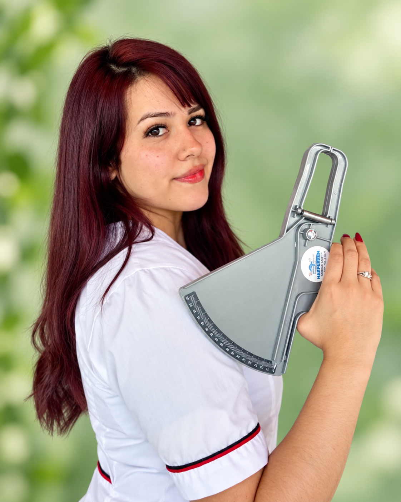

SAN ISIDRO DE LULES
DEREK GYM CENTER
Tu lugar para entrenar.
Los 7 días de la semana.
Musculación, funcional, cardio y profesores que te acompañan.
Entrenar debería ser simple
7 días abierto
Entrená cuando quieras, sin excusas. Incluso los domingos.
Profesores capacitados
Nuestros profes cuentan con matriculas que respaldan su conocimiento.
Seguimiento
Siempre hay alguien para guiarte y progresar.
Buen ambiente
Un espacio amigable y respetuoso para toda la comunidad
CONOCÉ DEREK
Tu gym, cerca de vos.
En Derek Gym Center combinamos equipamiento de primera línea con el calor de un gimnasio de barrio. Queremos que te sientas cómodo desde el primer día, en un ambiente moderno y motivador diseñado para tu progreso.
- Equipamiento moderno y mantenido.
- Espacios amplios ventilados y climatizados.
- Higiene constante en todas las áreas
ENTRENÁ A TU MANERA
Encontrá lo que te mueve.
EL EQUIPO
Conocé a tus profes.
Profesionales capacitados dispuestos a ayudarte a alcanzar tus metas.
ELEGÍ TU PLAN
El plan que te acompaña.
Los planes se ajustan a tu bolsillo. Todos incluyen entrenador y seguimiento profesional según el nivel.
$6.000
Ideal para entrenar cuando quieras.
- Entrenador
- Asesoramiento y seguimiento
$30.000/mes
Constancia y acompañamiento todo el mes.
- Entrenador
- Asesoramiento y seguimiento
- Descuento exclusivo en Plan Nutricional
$18.000/15 días
Flexibilidad para mantener tu ritmo.
- Entrenador
- Asesoramiento y seguimiento
NUEVO SERVICIO
Nutrición para avanzar.
Nutrición personalizada para ayudarte a alcanzar tus objetivos, con un descuento exclusivo para socios del gym. ¿Entrenás y no ves cambios? Empecemos por tu alimentación.

SERVICIOS
Consulta inicial
- Evaluación de las necesidades y objetivos
- Plan de alimentación 100% personalizado
- Educación nutricional
Seguimiento y control
- Evaluación del progreso
- Ajuste del plan
- Resolver dudas
Guía de cambio de hábitos
- Guía digital
- Sesión de coaching online
- Modificar hábitos alimenticios y estilo de vida
RECURSO EXCLUSIVO
RECETARIO DIGITAL
Ideas simples saludables para acompañar tu cambio.
- Almuerzos y cenas saludables
- Viandas prácticas para todos los días
- Opciones para mate y merienda
- Preparaciones dulces y saladas
¿Querés empezar? Coordiná tu consulta por Instagram.
Solicitar turno →@derek_gym_lules
Seguinos en Instagram.
PLANIFICÁ TU SEMANA
Entrená cuando quieras.
Tu rutina, tus horarios. Estamos cerca cuando nos necesitás.
Lunes — Viernes07:00 — 23:00
Sábados10:00 — 12:00
16:00 — 21:00
Domingos18:00 — 22:00
VENÍ A VERNOS
Donde estés,
estamos cerca.
Club Atlético Almirante Brown
1ra Junta 395
T4128 San Isidro de Lules, Tucumán
◷ Lunes a domingo
¿Cómo llegar? →TU MOMENTO ES AHORA
Empezá hoy.
Sumate a nuestra comunidad.
Vení a conocernos y descubrí por qué entrenar puede sentirse así.
Consultanos por Instagram →